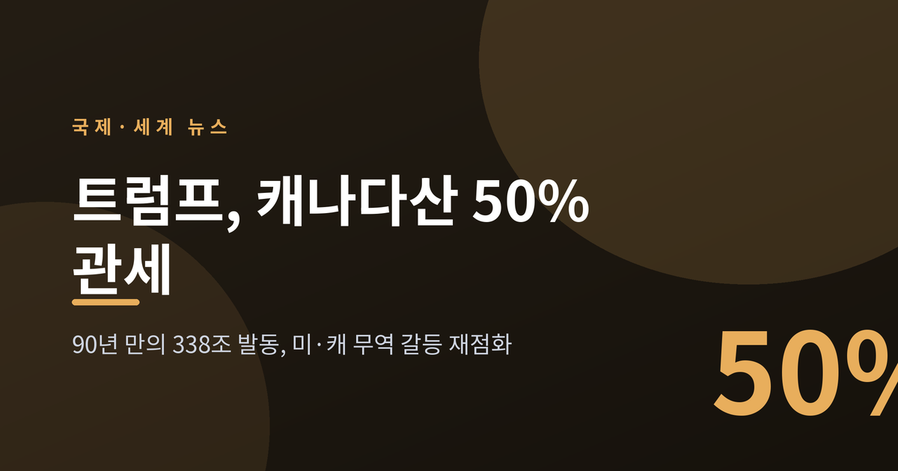
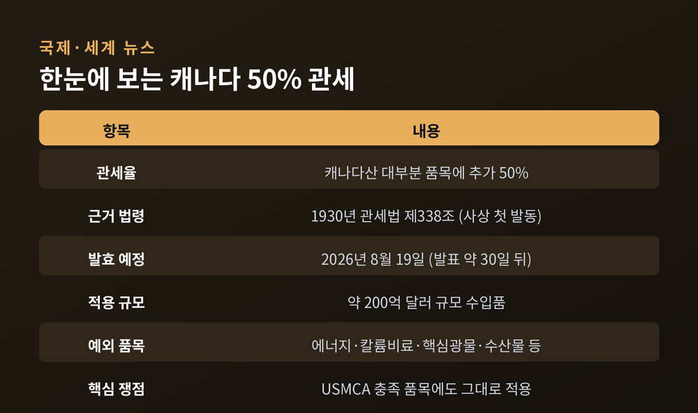
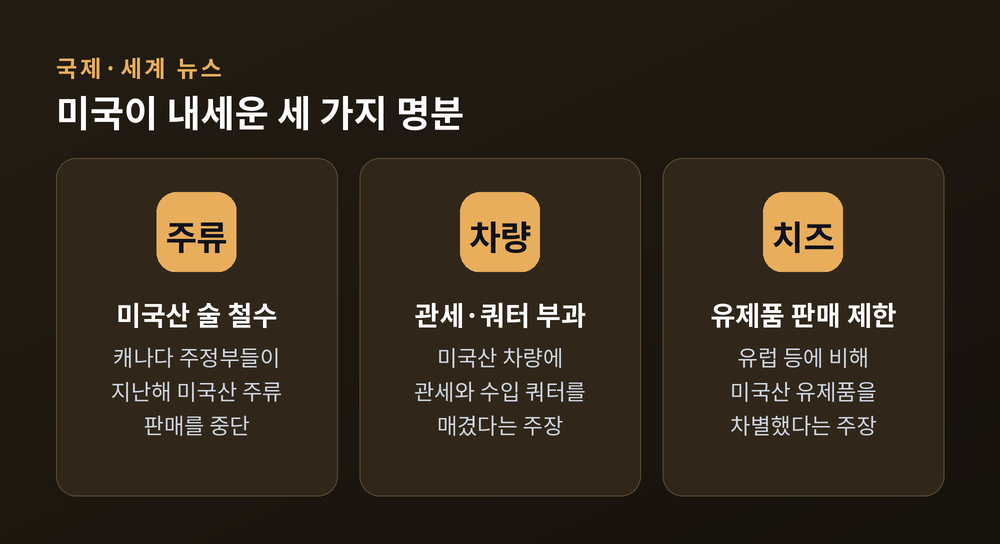
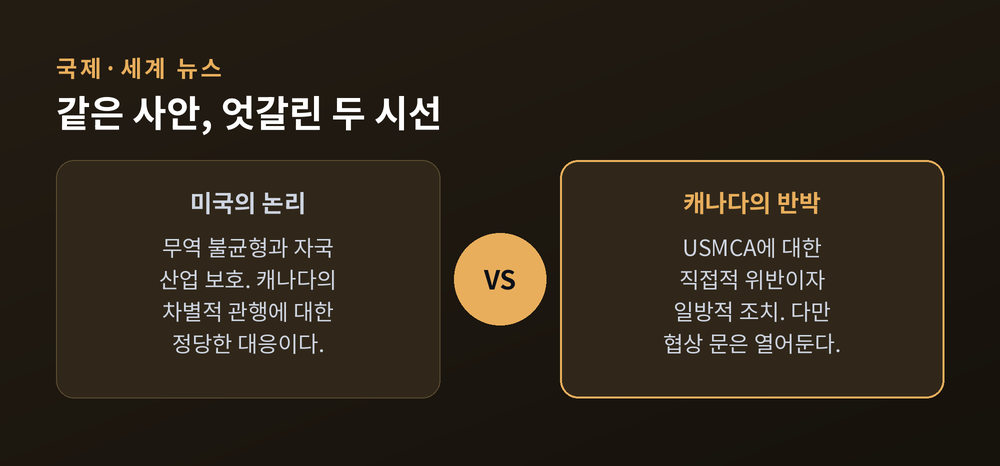
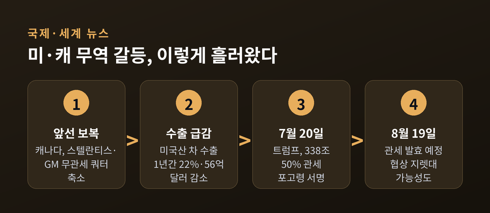
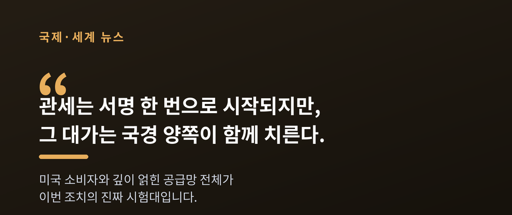

이번 글에서는 2026년 7월 트럼프 미국 행정부가 캐나다산 품목에 50% 관세를 부과한 사안을 정리해 보겠습니다. 무슨 일이 벌어졌는지, 왜 중요한지, 미국과 캐나다의 입장은 어떻게 갈리는지, 그리고 한국을 포함한 제3국에는 어떤 영향이 예상되는지 차분히 짚어보려 합니다.
먼저 핵심부터 말씀드립니다. 트럼프 대통령은 7월 20일 세 건의 포고령에 서명해 캐나다산 대부분 품목에 추가 50% 관세를 부과했습니다. 발효 예정일은 약 30일 뒤인 8월 19일입니다. 규모는 약 200억 달러어치 수입품에 이릅니다.

트럼프 행정부는 캐나다산 광범위한 품목에 50% 관세를 매기기로 했습니다.
근거로 삼은 법은 1930년 관세법 제338조입니다. 대통령이 이 조항을 실제로 발동한 것은 미국 역사상 처음입니다. 후버 행정부 시절 이후 사실상 잠들어 있던 조항이 90여 년 만에 깨어난 셈입니다.
관세 대상은 와인, 주류, 유제품부터 시멘트, 건축자재, 하키 스틱까지 다양합니다. 반면 에너지, 칼륨비료, 핵심 광물, 수산물, 그리고 이미 제232조 관세가 붙은 품목은 이번 조치에서 빠졌습니다.
한 가지 눈여겨볼 대목이 있습니다. 세 번째 포고령의 명분은 '자동차'였지만, 실제 관세 목록에는 오토바이를 빼면 자동차와 자동차 부품이 거의 담기지 않았습니다. 명분과 실제 품목 사이에 간극이 있는 것입니다.

핵심은 '탈출구'가 사라졌다는 점입니다.
예전엔 미국이 캐나다에 관세를 매겨도, USMCA(미국·멕시코·캐나다 협정)의 원산지 규정을 충족한 품목은 무관세로 통과했습니다. 캐나다산의 약 90%가 그 우산 아래 보호받았습니다. 지금은 다릅니다. 이번 338조 관세는 USMCA를 충족한 품목에도 그대로 적용됩니다.
미국·캐나다·멕시코 세 나라의 공급망은 오랫동안 하나의 몸처럼 얽혀 왔습니다. 그래서 CSIS 같은 연구기관은 이번 관세가 과거의 위협들과 달리 미국 기업과 소비자에게도 직접적인 비용과 물가 압력으로 돌아올 수 있다고 봅니다.
백악관이 내세운 명분은 캐나다의 '차별적 무역 관행'입니다.
세 갈래로 정리됩니다. 주류에서는 캐나다 주 정부들이 지난해 미국산 술을 판매점에서 철수시켰다는 점, 자동차에서는 캐나다가 미국산 차에 관세와 쿼터를 매겼다는 점, 유제품에서는 캐나다가 유럽 등 다른 나라에 비해 미국산 치즈 판매를 제한했다는 점을 문제 삼았습니다.

다만 이 명분에는 반론도 따라붙습니다. 유제품의 경우, 미국의 대캐나다 수출량이 실제로는 고율 관세가 적용되는 쿼터 기준선에 한참 못 미친다는 팩트체크가 있습니다. '차별받았다'는 주장의 근거가 약하다는 지적입니다.
전문가들의 우려도 만만치 않습니다. 338조를 해석한 법원 판례가 아직 없고, 일부 법률가는 이 조항이 후대 입법으로 사실상 폐지됐다고 봅니다. 조항이 요구하는 국제무역위원회의 조사 절차가 실제로 이뤄졌는지도 포고령에는 명시되지 않았습니다. WTO 규범을 위반할 소지가 크다는 분석도 있습니다.
배경을 넓혀 보면 그림이 조금 더 선명해집니다. 2026년 2월 미국 대법원은 트럼프의 IEEPA 관세를 무효화했습니다. 7월 24일에는 122조 관세도 만료를 앞두고 있었습니다. 쓸 수 있는 카드가 줄어든 상황에서, 행정부가 잠자던 338조를 꺼내 들었다는 해석이 나옵니다.
마크 카니 총리는 이번 조치를 USMCA에 대한 '직접적 위반'이라고 규정했습니다. "일련의 일방적 미국 무역 조치 중 가장 최근의 것"이라는 표현도 썼습니다.
그렇다고 곧바로 맞불을 놓지는 않았습니다. 카니 총리는 트럼프와 통화한 뒤 "무역 협상을 강화하기로 합의했다"고 밝혔고, 즉각적인 보복은 유보했습니다. 강경과 협상 사이에서 균형을 잡으려는 태도로 읽힙니다.
이미 벌어진 갈등의 흔적도 있습니다. 캐나다는 앞서 자국 내 무관세 수입 쿼터를 줄였습니다. 스텔란티스는 50%, GM은 24% 삭감했습니다. '캐나다 내 생산을 줄인 결정'을 이유로 들었습니다. 그 여파로 미국산 차량의 대캐나다 수출은 2025년 4월부터 2026년 3월까지 약 22%, 금액으로는 56억 달러가량 줄었습니다.
시장도 예민하게 반응했습니다. 관세 갈등이 고조되던 국면에서 포드 주가는 약 6%, GM은 4.3%, 스텔란티스는 9.4% 떨어졌습니다. 스텔란티스는 온타리오주 윈저 공장을 2주간 멈춰 세웠고, 약 900명의 노동자가 영향을 받았습니다. 관세가 서류 위의 숫자가 아니라 현장의 일자리 문제로 번지고 있음을 보여주는 장면입니다.

이 사안은 하루아침에 튀어나온 것이 아닙니다. 관세와 보복이 번갈아 쌓이며 여기까지 왔습니다.
트럼프 1기 때도 비슷한 장면이 있었습니다. 미국은 멕시코와 먼저 협상하고 캐나다를 압박했고, 2018년 캐나다산 철강과 알루미늄에 관세를 매긴 뒤 자동차 관세까지 위협했습니다. 캐나다는 막판에 협정에 합류했습니다. 이번에도 미·멕시코 협상은 빠르게 진전되는 반면, 미·캐나다는 공식 협상조차 시작하지 않았습니다.
그래서 이번 50% 관세를, 캐나다를 USMCA 재검토 협상 테이블로 끌어내기 위한 압박 카드로 보는 시각이 많습니다.

이 문제는 캐나다만의 일이 아닙니다.
338조는 원래 차별국뿐 아니라, 그 차별로 이득을 본 제3국에도 최대 50% 관세를 매길 권한을 담고 있습니다. 이번엔 발동되지 않았지만, 확산 우려의 불씨는 남아 있습니다. 한 저명 이코노미스트는 "캐나다는 그저 첫 번째로 그것을 알게 된 것뿐"이라며, 이번 조치를 글로벌 무역전쟁의 시험대로 규정했습니다.
한국도 시야 밖에 있지 않습니다. 트럼프 행정부는 캐나다에 이어 약 60개국을 관세 대상으로 예고했고, 한국도 조사 대상에 포함돼 있습니다. 관건은 한·미 무역 합의에서 정한 관세 상한 15%가 지켜지느냐입니다. 강제노동 관련 12.5% 관세가 한국 등 일부 국가에 제시됐고, 여기에 과잉생산 관세까지 더해지면 합산 세율이 15%를 넘어설 수 있다는 우려가 나옵니다.

정리하면 이렇습니다. 미국은 오랜 무역 불균형과 자국 산업 보호를 명분으로 강수를 뒀고, 캐나다는 협정 위반이라며 반발하면서도 협상의 문은 열어두었습니다. 그리고 전문가들은 이 관세가 결국 미국 소비자와 얽힌 공급망 전체에 부담으로 돌아올 수 있다고 경고합니다.
"관세는 서명 한 번으로 시작되지만, 그 대가는 국경 양쪽이 함께 치른다."
8월 19일, 이 관세가 예정대로 발효될지 아니면 협상의 지렛대로만 남을지. 그 답이 향후 미국의 무역 질서가 어디로 향할지를 가늠하는 첫 단서가 될 것입니다.